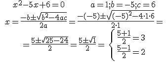

Ecuaciones de 2º grado
Ejemplos:
1) 3x2 - 5x + 2 = 0 a = 3 b = -5 c = 2
2) x2 – 3 = 0 a = 1 b = 0 c = -3
3) 2x2 – 100x = 0 a = 2 b = -100 c = 0
4) (x + 2) · (x – 3) = 14; x2 + 2x – 3x – 6 = 14
x2 + 2x – 3x – 6 – 14 = 0
x2 – x – 20 = 0; a = 1, b = -1, c = -20 Las soluciones de esta última son x = 5, x = -4
Ejemplo 1:

Ejemplo 2:
Ejemplo 3:
Ejemplo 4:
ECUACIONES INCOMPLETAS
Ejemplo 5: b = c = 0
Ejemplo 6: b = 0
Ejemplo 7: c = 0
Ejemplo 8: c = 0
Ejercicio. Resuelve las siguientes ecuaciones de 2º grado:
a) x2 - 5x + 4 = 0
b) x2 - 18x + 81 = 0
c) x2 + x + 15 = 0
d) x2 - 7x = 0
e) 147x2 = 0
f) 4x2 - 9 = 0
Soluciones: a) 1 y 4; b) 9; c) Φ; d) 0 y 7; e) 0; f) ±3/2
Obra publicada con Licencia Creative Commons Reconocimiento No comercial Compartir igual 4.0